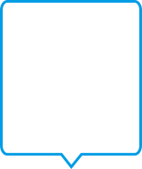
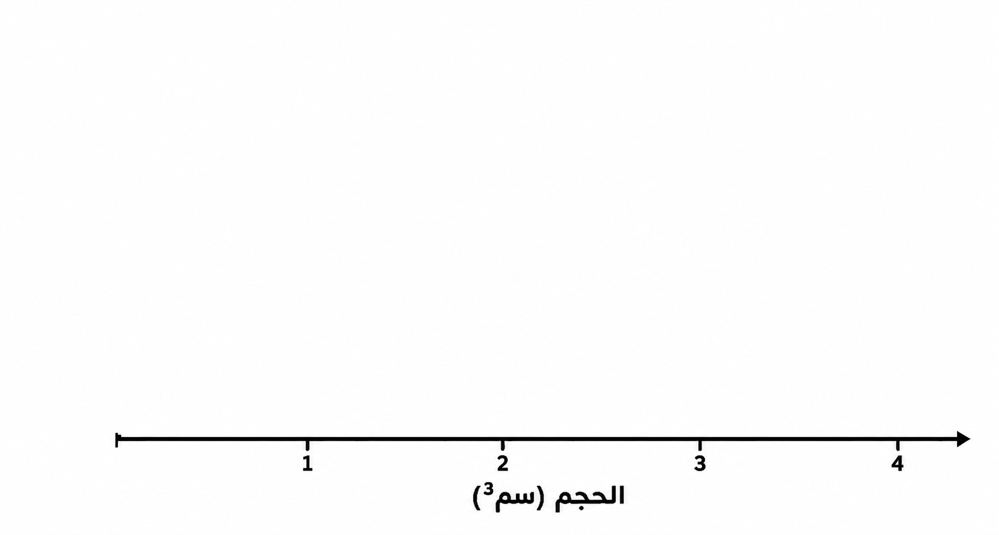
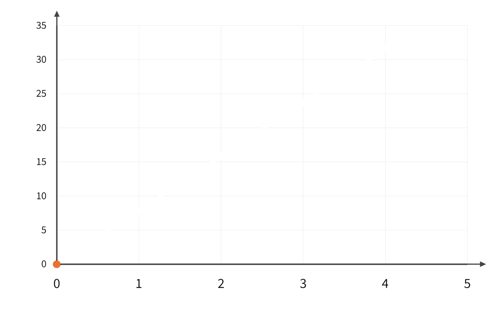
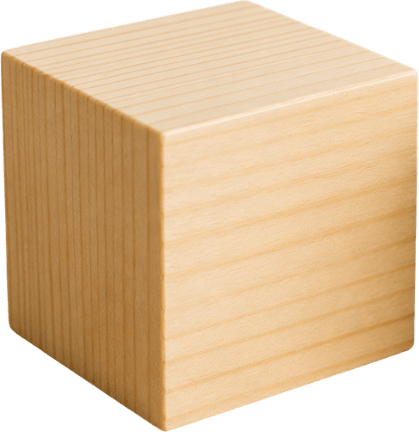
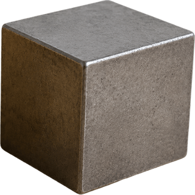
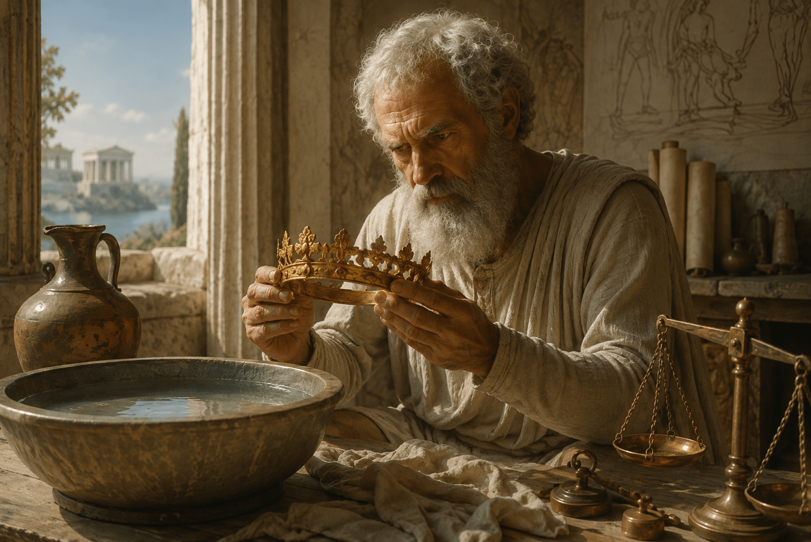

أضاع ماهر حقيبته أثناء ركوب الزوارق في نهر الأردن. أما القبعة فقد وجدها تطفو على الماء، لكن المفاتيح والحقيبة غاصت إلى الأسفل. لماذا هما تحديدًا؟ في هذه الوحدة سنشرح السبب (وأشياء أخرى مثيرة للاهتمام).
للتحقق مما إذا كنتم محقين، اضغطوا على الصور وستكتشفون معلومات تساعد في تفسير الظاهرة.
اعثروا على النسبة بين الكتلة والحجم
أمامكم مكعبات حديد بأحجام مختلفة.
اضغطوا على كل مكعب لاكتشاف كتلته وحجمه، وأكملوا الجدول.
جدول - بيانات الكتلة والحجم لمكعبات الحديد والنسبة بينهما:
| مكعب | كتلةحجم |
|---|---|
| أ |
|
| ب |
|
| ت |
|
| ث |
|
ماذا اكتشفتم حول العلاقة بين الكتلة والحجم في جميع أحجام مكعبات الحديد؟
جدول - بيانات الكتلة والحجم لمكعبات الحديد والنسبة بينهما:
| مكعب | كتلةحجم |
|---|---|
| أ | 7.91=7.9 |
| ب | 15.82=7.9 |
| ت | 23.73=7.9 |
| ث | 31.64=7.9 |
كما هو الحال في الحديد، في مواد أخرى أيضًا تبقى النسبة بين الكتلة والحجم ثابتة.
تُسمّى هذه النسبة الكثافة، وهو فريد لكل مادة.
تُقاس الكتلة بالجرام، ويُقاس الحجم بـسم³، وتُقاس الكثافة بالجرام لكل سم³ (جرام/سم³).

فكروا في الأمر كما يلي:
نحن نفحص كم كتلة توجد في كل وحدة حجم.
جدول الكثافات - "دليل بصمة الإصبع" للمواد:
إليكم جدول يعرض قيم الكثافة لبعض المواد الشائعة في درجة حرارة الغرفة (المعرّفة في العلم بـ-25°C).
لكل مادة قيمة كثافة تميّزها، يمكن الاستناد إليها كـ"البصمة الفريدة" الخاصة بتلك المادة.
| مادة | حالة المادة | الكثافة (جرام / سم³) |
|---|---|---|
| الذهب | صلب | 19.32 |
| نحاس | صلب | 8.96 |
| الحديد | صلب | 7.87 |
| ماء | سائل | 1.00 |
| ثاني أكسيد الكربون | غاز | 0.00197 |
توجد جداول مفصّلة تتضمّن قيم الكثافة لمئات بل آلاف المواد.
ماء
كثافة الماء هي 1 جرام / سم³.
في تتمة الوحدة سنكتشف لماذا هذه القيمة بالتحديد مهمة لفهم ظواهر طفو وغرق.
| مادة | حالة المادة | الكثافة (جرام / سم³) |
|---|---|---|
| الذهب | صلب | 19.32 |
| نحاس | صلب | 8.96 |
| الحديد | صلب | 7.87 |
| ماء | سائل | 1.00 |
| ثاني أكسيد الكربون | غاز | 0.00197 |
غاز
للغاز خاصيّة مميزة. تتأثر كثافته بشكل كبير من درجة الحرارة والضغط
(على عكس معظم المواد الصلبة والسوائل التي لا تتغير فيها قيمة الكثافة تقريبًا مع تغيرات درجة الحرارة).
| مادة | حالة المادة | الكثافة (جرام / سم³) |
|---|---|---|
| الذهب | صلب | 19.32 |
| نحاس | صلب | 8.96 |
| الحديد | صلب | 7.87 |
| ماء | سائل | 1.00 |
| ثاني أكسيد الكربون | غاز | 0.00197 |
لحظة للتفكير...
وجد العلماء مادة غير معروفة.
قاموا بقياس كثافتها وحصلوا على قيمة قدرها 8.96 جرام لكل سم³.
برأيكم، هل يمكن معرفة من أي مادة صُنِعَت؟
حتى الآن استعنّا بجداول لتمثيل بيانات الكتلة والحجم للمواد، ولفهم العلاقة بينهما (الكثافة).
الآن سنرى كيف يمكن تمثيل كثافة المواد أيضًا بواسطة رسم بياني.
اضغطوا على الأزرار لبناء المحاور الخاصة بالرسم البياني:
حتى الآن استعنّا بجداول لتمثيل بيانات الكتلة والحجم للمواد، ولفهم العلاقة بينهما (الكثافة).
الآن سنرى كيف يمكن تمثيل كثافة المواد أيضًا بواسطة رسم بياني.
اضغطوا على الأزرار لبناء الرسم البياني:

الـمحور الأفقي (X) يعرض
حجم المادة بسم³.
كلما تقدمنا نحو اليمين،
الحجم أكبر.
حتى الآن استعنّا بجداول لتمثيل بيانات الكتلة والحجم للمواد، ولفهم العلاقة بينهما (الكثافة).
الآن سنرى كيف يمكن تمثيل كثافة المواد أيضًا بواسطة رسم بياني.
اضغطوا على الأزرار لبناء الرسم البياني:
الـمحور الأفقي (X) يعرض
حجم المادة بسم³.
كلما تقدمنا نحو اليمين،
الحجم أكبر.
المحور العمودي (Y) يعرض كتلة المادة بالجرام.
كلما ارتفعنا إلى الأعلى،
تكون الكتلة أكبر.
كيف ننقل بيانات
الكتلة / الحجم لمادة من جدول إلى رسم بياني؟
اضغطوا على السهم لنقل البيانات من الجدول إلى الرسم البياني.
بيانات الكتلة / الحجم في الحديد:

الحجم (سم³)الكتلة (غرام)| الكتلة (غرام) | الحجم (سم³) | كتلةحجم (جرام/سم³) |
|---|---|---|
| 7.9 | 1 | 7.91=7.9 |
| 15.8 | 2 | 15.82=7.9 |
| 23.7 | 3 | 23.73=7.9 |
| 31.6 | 4 | 31.64=7.9 |
الآن نَصِل النقاط بخط، وها هو الرسم البياني للحجم / الكتلة كاملًا:
كثافة الحديد: 7.9 (جرام / سم³)
كثافة خشب الصنوبر: 0.5 (جرام / سم³)
ماذا يمكن أن نستنتج من حقيقة أن خط الحديد في الرسم البياني شديد الانحدار أكثر من خط الصنوبر؟
- الحديد
- خشب الصنوبر
الطفو، الغوص والعلاقة بقيمة الكثافة:
لديكم كأس ماء ومكعبان بكثافة مختلفة:
الأولى من خشب الصنوبر، والثانية من الحديد.
اسحبوا كل مكعب إلى الكأس وتحققوا مما يحدث.
الاستنتاج هو:
للمعرفة ما إذا كانت مادة ما ستطفو أو ستغوص في الماء، تتم مقارنة كثافتها بكثافة الماء التي تساوي 1 (جرام / سم³):

0.5جرام / سم³
7.9جرام / سم³يمكن عرضه أيضًا في الرسم البياني:
المواد التي تقع فوق خط كثافة الماء (الأزرق) - تغوص، والمواد التي تقع تحته - تطفو.
- ماء
- الحديد
- خشب الصنوبر
اختبار الفهم
فيما يلي مواد مختلفة وقيم الكثافة الخاصة بها بالجرام لكل سم³.
قرروا بالنسبة لكل مادة ما إذا كانت ستطفو أو ستغوص، واسحبوها إلى المكان المناسب.
لحظة للتفكير
جسمان مصنوعان من نفس المادة – النحاس
(قيمة الكثافة: 8.9 جرام / سم³، أعلى من كثافة الماء).
هل سيغوص كلاهما فعلًا؟
اسحبوا الأجسام إلى الماء للتحقق من ذلك.
كثافة النحاس أعلى من كثافة الماء.
كيف إذن يمكن أن تغوص العملة المعدنية بينما يطفو القارب؟
اضغطوا على البطاقات واكتشفوا:
أها! يمكن للهواء أن يقلل الكثافة المتوسطة ويساعد الجسم على الطفو.
الكثافة المتوسطة هي:
النسبة بين الكتلة الكليّة للجسم وبين الحجم الكلّي الذي يشغله، بما في ذلك الفراغات والمواد الموجودة بداخله (مثلًا، الهواء).
الغازات وخاصيّة الكثافة
اضغطوا وتعرّفوا على حقائق مثيرة للاهتمام:
الغازات وخاصيّة الكثافة
في الغازات هذا هو نفس المبدأ تمامًا كما في الماء!
إذا كانت الكثافة الغازية أقل من كثافة الهواء، فإنه سيطفو في الهواء (سيرتفع).
إذا كانت كثافته أكبر من كثافة الهواء، فسوف يغوص في الهواء (ينزل).
ماذا بقيَ عالقًا في عقولنا؟
سؤالان بسيطان للإحماء قبل أن نتقدم
أكملوا من المخزون:
نجح أرخميدس في قياس حجم التاج.
كيف يمكنه فحص ما إذا كان التاج مصنوعًا من الذهب الخالص؟
